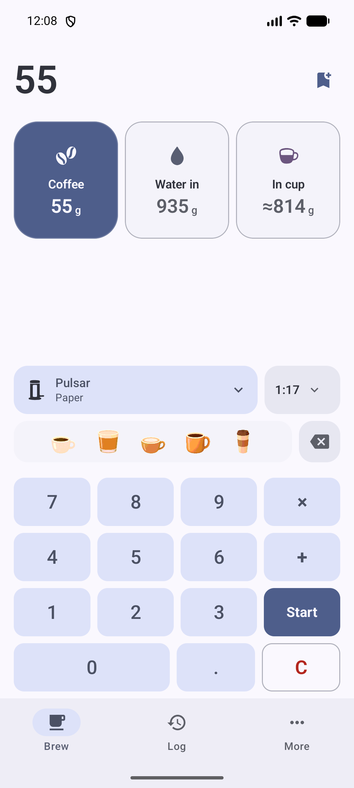

DESIGN PROTOTYPE · SIMULATED BREWING
App integration preview
Current app screens, with shared brew activity and the proposed visual guides.
Reviewed examples 01 Chemex02 Espresso03 Cold brew
Timer state Saved preview No active timers Cold brew · steeping Cold brew · ready to filter Two active brews Chemex · bloom Espresso · pulling Any method · custom timer Interactive sample App visibility App open Away · notifications Away · lock screen Preview appearance Current app · blue (light) Coffee fallback · light Coffee fallback · dark Simulated notification access Allowed Blocked Simulation controls +10 seconds +45 seconds +1 hour +14 hours Reset preview Large text · 200%
No live brew.
Review icons at actual sizes ↗
Review all 28 cup & vessel icons ↗
Read the design decisions ↗
Current UI · reference 
The reference screenshot couldn’t load.
Try again Unmodified emulator screenshots · installed debug app 1.5.0. Sample data differs from the reviewed recipes. The preview adds activity to shared chrome and opens guide detail through the existing entries.